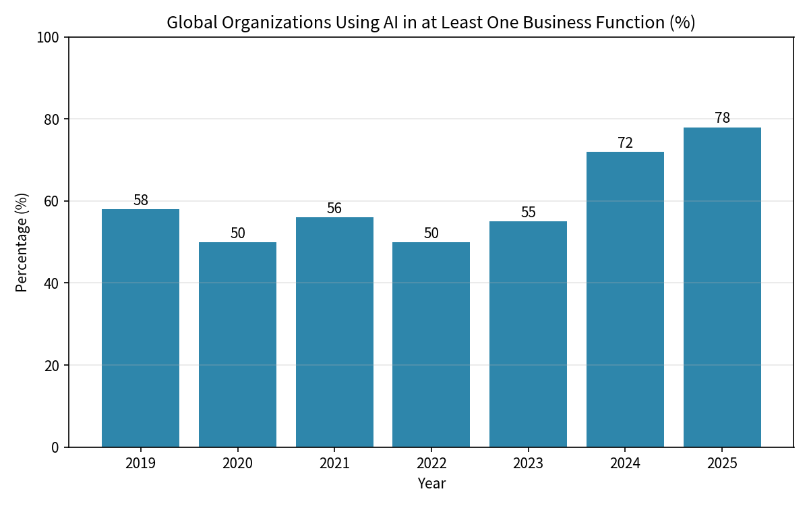
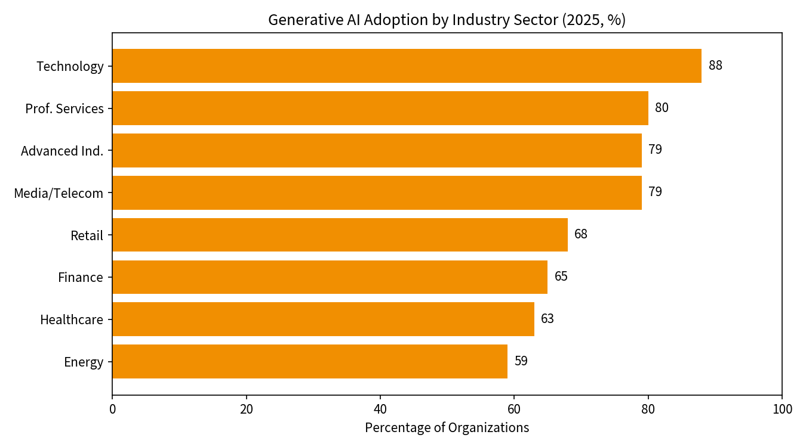
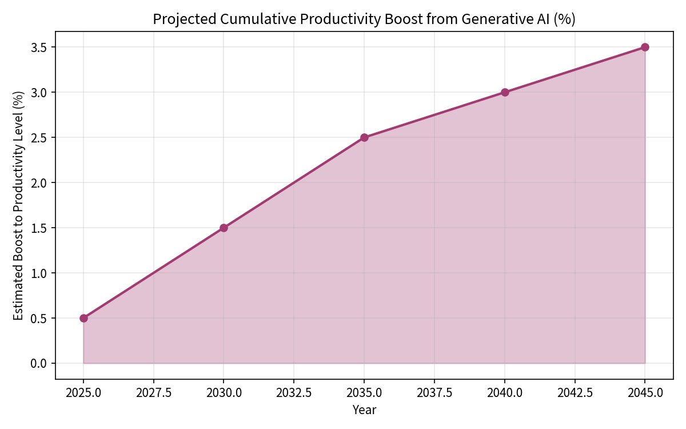

The Evolution of Business in the Age of Artificial Intelligence: Historical Development, Current Impacts, and Projections for 2046
Abstract
A comparison of the impact of AI in the past versus today, as well as the future development of AI-driven business.
Article
Business and Economics
17.08.2026
English
Abstract
This research paper examines the profound transformation of business practices driven by artificial intelligence (AI). It traces the historical evolution of business models from the Industrial Revolution through the digital era, analyzes the current state of AI adoption and its measurable effects on productivity, employment, and organizational structures as of 2025-2026, and develops evidence-based projections for the influence of AI on business over the next two decades (to approximately 2046). Drawing on recent firm-level surveys, industry reports, and economic modeling, the analysis reveals that while AI adoption has reached 70-78% of organizations globally, realized productivity gains remain modest to date. However, firms and researchers forecast substantial acceleration, with generative AI potentially adding 0.1-0.6 percentage points to annual labor productivity growth through 2040 and transforming core business processes, value chains, and competitive dynamics. The paper concludes that businesses that strategically integrate AI while managing workforce transitions and ethical considerations will be best positioned for long-term success.
1. Introduction
Business has undergone successive waves of technological and organizational transformation over the past two centuries. From the mechanization of the Industrial Revolution to the rise of mass production, the information technology revolution, and the platform economy of the early 21st century, each technological general-purpose technology has reshaped how value is created, delivered, and captured. Artificial intelligence, particularly generative AI and AI agents, represents the latest and potentially most disruptive of these general-purpose technologies.
The purpose of this paper is threefold: 1. To situate the current AI revolution within the longer historical arc of business evolution; 2. To synthesize the latest empirical evidence on AI’s impact on contemporary business operations, productivity, and labor markets; and 3. To project plausible trajectories for AI’s influence on business structures and strategies over the next twenty years. The analysis is grounded in social science perspectives, drawing primarily from economics, management studies, and organizational theory.
The paper is structured as follows. Section 2 reviews the historical evolution of business models. Section 3 examines the current state of AI adoption and its measured impacts. Section 4 presents analytical findings supported by data visualizations and tables. Section 5 develops forward-looking scenarios for 2046. Section 6 discusses implications and concludes.
2. Historical Evolution of Business Practices
2.1 From the Industrial Revolution to the Managerial Firm
The First Industrial Revolution (late 18th to early 19th century) introduced mechanization powered by water and steam, shifting production from artisanal workshops to factories. This created the need for new coordination mechanisms. The subsequent waves - steam and railways, steel and electricity, and the automobile and oil complex - each generated corresponding management models. The “Line-and-Staff” model, Scientific Management (Taylorism), and later the Strategy-and-Structure model of the multidivisional corporation successively addressed the challenges of scale, efficiency, and product differentiation (Bodrožić & Adler, 2018; Freeman & Louçã, 2001).
By the mid-20th century, the professionally managed firm had become dominant. Large corporations coordinated complex value chains through hierarchical structures, formal planning, and professional managers who were not necessarily owners. Quality management and lean production later refined these models, emphasizing continuous improvement and worker involvement.
2.2 The Digital and Platform Era
The information and communication technology (ICT) revolution of the late 20th and early 21st centuries introduced a new organizational paradigm often described as the Network or Platform firm. Microprocessors, personal computers, the internet, smartphones, and cloud computing enabled the externalization of non-core activities, the rise of global value chains, and the emergence of multi-sided platforms (e.g., Amazon, Google, Uber, Airbnb). Economic decision-making increasingly shifted from hierarchical managers to algorithms and software-mediated matching (Kenney & Zysman, 2016).
Table 1 summarizes key periods in this evolution.
Table 1. Major Technological and Organizational Waves in Business History
| Period | Key Technologies | Dominant Business Model | Core Logic |
|---|---|---|---|
| 1750s-1840s | Water power, machinery | Factory system | Mechanization & scale |
| 1840s-1890s | Steam, railways | Line-and-Staff | Professional management |
| 1890s-1940s | Steel, electricity | Scientific Management | Workflow optimization |
| 1940s-1980s | Automobile, oil, electronics | Strategy-and-Structure / M-form | Diversification & control |
| 1980s-2010s | ICT, internet, platforms | Network / Platform firm | Digital coordination & ecosystems |
| 2010s-present | Cloud, big data, AI | AI-augmented / Agent-based | Automation of cognition |
The current period marks a transition from digital platforms to AI-augmented and potentially agent-based organizations, in which software agents can autonomously perform complex cognitive and, increasingly, physical tasks.
3. Current Impacts of Artificial Intelligence on Business (2024-2026)
3.1 Adoption Patterns
By 2025-2026, AI adoption has become widespread. Surveys of firms across the United States, United Kingdom, Germany, and Australia indicate that approximately 69-78% of organizations actively use some form of AI (Yotzov et al., 2026; Baslandze et al., 2026). Adoption is highest among younger, more productive firms and larger enterprises. McKinsey data show that 78% of organizations used AI in at least one business function in 2025, up from 55% in 2023 (Stanford AI Index, 2026). Generative AI adoption follows a similar trajectory, reaching around 71-79% in leading surveys.
Figure 1 illustrates the rapid rise in organizational AI usage over recent years.

Figure 1. Global Organizations Using AI in at Least One Business Function (%)
Sectoral differences remain pronounced. Technology firms lead with approximately 88% adoption of generative AI, followed by professional services (80%) and advanced industries (79%). Energy and materials lag at around 59% (McKinsey, 2025). Figure 2 visualizes these disparities.

Figure 2. Generative AI Adoption by Industry Sector (2025)
3.2 Productivity and Employment Effects to Date
Despite high adoption rates, the realized impact of AI on firm-level productivity and employment has been limited so far. Large-scale surveys of CFOs and CEOs report that more than 80-89% of firms observed no measurable impact of AI on employment or labor productivity (sales per employee) over the past three years (Yotzov et al., 2026). Average estimated productivity gains remain small (around 0.3% cumulative in some samples).
Nevertheless, micro-level experiments and case studies reveal clearer benefits in specific tasks. Customer-support agents using AI assistants resolve 14-15% more issues per hour; developers using tools such as GitHub Copilot complete approximately 26% more tasks (Brynjolfsson, Li & Raymond, 2025; Stanford AI Index, 2026). Enterprise users of advanced AI systems report time savings of 40-60 minutes per day (OpenAI, 2025). A 2025 Boston Consulting Group analysis found that AI-leading firms achieved 1.7x revenue growth and 3.6x greater total shareholder return compared with peers over a three-year period (BCG, 2025).
This discrepancy - strong task-level gains but muted firm and economy-wide effects - is consistent with historical patterns of general-purpose technology diffusion, in which complementary investments in skills, processes, and organization lag technological capability.
4. Analytical Findings and Comparative Data
Table 2 synthesizes key quantitative indicators from recent surveys and studies.
Table 2. Selected Indicators of AI Impact on Business (2024–2026)
| Indicator | Value / Finding | Source Context |
|---|---|---|
| Firm AI adoption (multi-country) | ≈69-78% | US, UK, DE, AU firm surveys |
| Organizations using AI (≥1 function) | 78% (2025) | McKinsey / Stanford AI Index |
| Past 3-year productivity impact (avg.) | ≈0.3% (most firms report zero) | CFO/CEO surveys |
| Expected 3-year productivity boost | +1.4% (avg. firm forecast) | Same firm surveys |
| Expected employment change (3 yrs) | -0.7% (avg. forecast) | Same firm surveys |
| Task-level productivity (support) | +14-15% issues/hour | Experimental studies |
| Task-level productivity (coding) | +26% completed tasks | Experimental studies |
| AI leaders vs. peers (revenue growth) | 1.7x over 3 years | BCG 2025 |
| Worker daily time savings | 40-60 minutes | Enterprise AI reports |
These data underscore a classic “productivity paradox” of early GPT diffusion: high expectations and localized gains coexist with limited aggregate effects until complementary changes mature.
5. Projected Influence of AI on Business by 2046
Looking ahead twenty years, several credible modeling exercises provide quantitative anchors. The Penn Wharton Budget Model estimates that generative AI will raise the level of total factor productivity (and thus GDP) by approximately 1.5% by 2035, nearly 3% by 2055, and 3.7% by 2075 (Penn Wharton Budget Model, 2025). The annual contribution to productivity growth peaks around 0.2 percentage points in the early 2030s before fading as adoption saturates.
McKinsey analysis suggests that generative AI could enable labor productivity growth of 0.1 to 0.6 percentage points annually through 2040, depending on adoption speed and the successful redeployment of labor (McKinsey, 2023/updated). Half of current work activities could be automated between 2030 and 2060, with a midpoint around 2045 - roughly a decade earlier than pre-generative AI estimates.

Figure 3. Illustrative Projected Cumulative Productivity Boost from Generative AI
5.1 Structural Transformations Expected by 2046
Beyond aggregate productivity, qualitative shifts in business organization are anticipated:
- Autonomous AI agents will handle large portions of routine cognitive work (analysis, customer interaction, coding, logistics optimization), shifting human roles toward oversight, creativity, relationship management, and ethical judgment.
- Business models will increasingly become adaptive and predictive, with real-time personalization of products, pricing, and services at scale.
- Value chains will shorten and reconfigure as AI enables more localized or on-demand production and reduces coordination costs.
- Competitive advantage will rest more heavily on proprietary data, AI talent and governance capabilities, and the ability to integrate AI safely into core processes.
- New organizational forms - hybrid human-AI teams, AI-native startups, and possibly decentralized autonomous structures - will coexist with traditional firms that successfully augment rather than simply automate.
More speculative scenarios (sometimes termed “Agent World”) suggest that if AI agents become capable of performing the majority of economically valuable tasks, annual GDP growth differentials of several percentage points relative to a pure “tool” scenario could compound into substantially larger economies by the mid-2040s (RAND, 2025). Such outcomes remain highly uncertain and contingent on technological progress, safety, regulation, and complementary investments.
6. Discussion and Conclusion
The historical record shows that each major technological revolution eventually produced not only new products and processes but also new dominant organizational forms and management philosophies. The AI revolution is following a similar path, albeit at an accelerated pace. Current data indicate that we are still in the early diffusion phase: adoption is high, but deep integration and complementary organizational change lag, resulting in modest measured productivity gains at the firm level.
Looking toward 2046, the balance of evidence points to significant but not instantaneous transformation. Businesses that treat AI as a general-purpose capability requiring co-investment in human capital, process redesign, data infrastructure, and governance are likely to capture disproportionate gains. Those that treat it merely as a cost-cutting tool risk underperformance and workforce disruption without corresponding productivity benefits.
From a social-science perspective, the key challenges will include managing distributional consequences (who captures the productivity gains), ensuring transparency and accountability of AI systems, and redesigning education and lifelong learning systems to prepare workers for hybrid human-AI environments. Policy frameworks that encourage experimentation while safeguarding against systemic risks will shape the ultimate trajectory.
In summary, artificial intelligence is not merely another digital tool; it is the next general-purpose technology reshaping the foundations of business. Understanding its historical continuity with previous revolutions, its current uneven impacts, and its plausible long-term effects enables more informed strategic and policy responses. The businesses and societies that navigate this transition successfully will define the economic landscape of the mid-21st century.
Bibliography
- Baslandze, S., et al. (2026). Firm-level evidence on artificial intelligence adoption and its economic effects. Federal Reserve Bank of Atlanta Working Paper.
- Bodrožić, Z., & Adler, P. S. (2018). What explains the evolution of management models over the past two centuries? LSE Business Review.
- Boston Consulting Group. (2025). AI leaders and business performance: Revenue growth and shareholder returns analysis.
- Brynjolfsson, E., Li, D., & Raymond, L. (2025). Generative AI at work. Quarterly Journal of Economics / NBER Working Paper.
- Deloitte. (2026). The state of AI in the enterprise: 2026 AI report. Deloitte Insights.
- Freeman, C., & Louçã, F. (2001). As time goes by: From the industrial revolutions to the information revolution. Oxford University Press.
- Kenney, M., & Zysman, J. (2016). The rise of the platform economy. Issues in Science and Technology, 32(3).
- McKinsey & Company. (2023, updated analyses 2025). The economic potential of generative AI: The next productivity frontier. McKinsey Global Institute.
- McKinsey & Company. (2025). The state of AI: 2025 global survey. McKinsey Global Institute.
- OpenAI. (2025). The state of enterprise AI: 2025 report. OpenAI Business.
- Penn Wharton Budget Model. (2025). The projected impact of generative AI on future productivity growth. University of Pennsylvania.
- RAND Corporation. (2025). Quantifying AI’s economic potential: Growth differentials between assistive and autonomous development scenarios. RAND Research Report.
- Stanford Institute for Human-Centered Artificial Intelligence. (2026). Artificial Intelligence Index Report 2026. Stanford University.
- Yotzov, I., Barrero, J. M., Bloom, N., et al. (2026). Firms predict an AI productivity boom is coming. CEPR VoxEU / Federal Reserve surveys of CFOs and CEOs.
Appendix A. Additional Data on AI Adoption by Country
The following table presents firm-level AI adoption rates from multi-country surveys conducted in late 2025-early 2026 among CFOs, CEOs, and senior executives.
Table A1. AI Adoption Rates by Country (2025-2026)
| Country | Share of Firms Using AI | Notes |
|---|---|---|
| United States | 78% | Highest among surveyed countries |
| United Kingdom | 71% | Strong among larger firms |
| Germany | 65% | More cautious adoption pattern |
| Australia | 59% | Lower among smaller firms |
| Average (4 countries) | ≈69% | Weighted across firm sizes |
Source: Compiled from Yotzov et al. (2026) and related Federal Reserve / Bank of England firm surveys.
Appendix B. Methodological Notes
This research paper is based primarily on secondary data analysis. The quantitative indicators presented in the main text and appendices are drawn from publicly available firm surveys, experimental studies, and economic modeling exercises published between 2023 and 2026.
Key methodological limitations include:
- Most firm-level surveys rely on self-reported estimates of productivity and employment effects, which may contain measurement error or optimism bias.
- Task-level experimental gains (e.g., +14-26%) do not automatically translate into firm or economy-wide productivity growth due to complementary investment requirements.
- Long-term projections (to 2046) are inherently uncertain and depend on assumptions about technological progress, regulation, labor reallocation, and capital deepening.
Readers are encouraged to consult the original sources listed in the Bibliography for full methodological details and confidence intervals.
Appendix C. Glossary of Key Terms
Generative AI: A class of artificial intelligence systems capable of generating new content (text, code, images, etc.) based on patterns learned from training data.
General-Purpose Technology (GPT): A technology that has broad applicability across many sectors of the economy and the potential to drive sustained productivity growth (e.g., steam power, electricity, ICT, AI).
AI Agent: An autonomous or semi-autonomous software system that can plan, reason, and execute multi-step tasks with limited human supervision.
Labor Productivity: Output (e.g., sales or value added) per unit of labor input, commonly measured as sales per employee or value added per hour worked.
Platform Firm: A business model that creates value by facilitating interactions between two or more interdependent groups (e.g., buyers and sellers, users and advertisers).